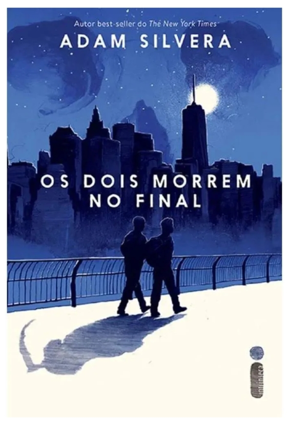

Os dois morrem no final - Adam Silveira
Sinopse
No dia 5 de setembro, pouco depois da meia-noite, Mateo Torrez e Rufus Emeterio recebem uma ligação da Central da Morte. A notícia é devastadora: eles vão morrer naquele mesmo dia.
Os dois não se conhecem, mas, por motivos diferentes, estão à procura de um amigo com quem compartilhar os últimos momentos, uma conexão verdadeira que ajude a diminuir um pouco a angústia e a solidão que sentem. Por sorte, existe um aplicativo para isso, e é graças a ele que Rufus e Mateo vão se encontrar para uma última grande aventura: viver uma vida inteira em um único dia.
Uma história sensível e emocionante, Os dois morrem no final nos lembra o que significa estar vivo. Com seu olhar único, Adam Silvera mostra que cada segundo importa, e mesmo que não haja vida sem morte, nem amor sem perda, tudo pode mudar em 24 horas.